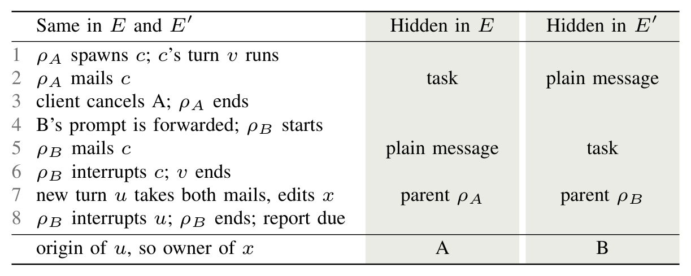

The bug, the checker and the fix, in motion
Four short animations. The first two show how an edit lands in the wrong report and how Turnstile checks the orders in which it can happen. The last two show the fix and why no adapter can always be exact on the Codex 0.160.1 wire.
The animations are drawn by hand from the paper’s Fig. 1, Table I and Theorem 1; they do not run an adapter. Each chapter plays on into the next, and you can drag the bar to any moment.
The work in three steps
1. The problem
A subagent can outlive the request that started it. Adapters keep per-request state, so a late edit gets credited to whichever request is current when it arrives. The report then has the right request id and the wrong files, and the editor cannot tell.
2. How we check it
We state an origin-attribution invariant: a request’s report lists only work that request dispatched. Turnstile runs the unmodified adapter against a scripted provider under the event orders the protocol allows, and checks every report against a ledger of origins.
3. How we fix it
Bind each child to the request that dispatched it, read from the spawn item, not to the request that is current when its events arrive. On Codex this removes every misattribution in our scenarios, at the cost of sometimes leaving an edit out instead of guessing. We also prove that on the typed Codex 0.160.1 wire, adapters meeting stated conditions cannot always attribute exactly, and that origin links on the event stream suffice.
Arrival is not origin
The Agent Client Protocol (ACP) is a JSON-RPC protocol, usually over stdio, between a client such as an IDE and a coding agent. Adapters wrap vendor runtimes, which we call providers, such as Codex and Claude Code. Some adapters also derive per-request outputs: for JetBrains AIR, the Codex and Claude adapters return an agent file-change report that lists the paths a request changed, before answering that request.
Agents now delegate to subagents, and some providers let a subagent outlive the turn that started it. Both adapters we study keep per-request bookkeeping, created for each request and disposed when it returns, so a late event from an older subagent can arrive after the state that recorded its origin is gone. Credited to the request active on arrival, it puts one request’s changes in another’s report, and the client cannot tell: the report has the right request id and the wrong contents. The AIR documentation does not say who owns paths changed by children.
- Request
- One
session/promptcall: A, B, and so on. - Turn
- Provider-side work: one root turn per request, plus child turns run by subagents (children).
- Origin
- The request whose processing dispatched a turn, inherited by nested children.
The origin-attribution invariant
Informally, a report for request r should list only paths of work whose origin is r, and all of them seen so far, or say that it may be incomplete. A late write by A’s child may be legitimate; listing it as B’s is not. We call violations turn-attribution bugs. The usual one, arrival-time attribution, takes the request active now as the origin.
Sound
Every path in the report has an edit, received before the report, from some turn whose origin is the report’s request.
Complete
Every path edited by a turn of that origin, with the edit received before the report, is in it.
Safe
Sound, and the completeness flag (declaredComplete) is set only if the report is also complete. Reporting nothing, with the flag clear, is always safe.
An adapter is exact if, in all legal executions, its available reports are sound and complete. Both adapters always clear declaredComplete, so for them safety is soundness. The invariant is our proposal, not part of the AIR contract.
Turnstile: exploring protocol-legal schedules
Upstream file-report tests never send a second request while a subagent of the first still runs, and a hand-picked failing order invites the objection that providers never produce it. Turnstile therefore enumerates the orders a provider model allows and runs the unmodified adapter under each schedule it explores. It is an LLM-free checker in the style of systematic concurrency testing (CHESS).
- ScenarioProvider events and client actions on FIFO streams, with happens-before edges and triggers.
- ExplorerEnumerates schedules: total orders of the scenario’s 10 to 24 items that respect the constraints.
- Per schedule, in a fresh adapter process ACP clientSends prompts and cancels; captures reports. AdapterUnmodified build of the pinned commit. Provider stubReached through a relay at the provider path; speaks Codex app-server JSON-RPC or Claude CLI stream-json.
- OracleChecks each report against a ledger of true origins, hidden from the adapter.
What counts as legal
For Codex, the rules combine guarantees confirmed in the pinned provider’s source with restrictions that only remove legal orders, so they can hide failures but cannot create illegal orders. The guarantees: events within a thread are FIFO; turn/interrupt reaches only the root thread, so children keep emitting after it; nothing orders events across threads; and a parent waits for children only through a wait tool. For Claude we could not check provider source, so the stub encodes the adapter’s own assumptions (background-subagent frames share the CLI’s single ordered stream, are tagged with their launching tool call, and may interleave with later root turns), each seen in live Claude runs.
How a verdict is reached
- The explorer delivers one item at a time and waits until neither side has sent a message for 150 ms, a heuristic for quiescence. It explores message orders, not races inside the adapter.
- The oracle reports a misattribution when a report lists a path whose origin is another request, and missing expected output when a report omits a required own path whose evidence arrived before it. It also flags missing, unexpected, early, or late reports, false completeness claims, and adapter exits.
- A schedule that hangs, errors, or diverges on re-run is inconclusive, never clean. Violating schedules are re-run three times and count only if they fail identically. Four deliberately broken builds (no B report, dropped child paths, an early report, a crash) were each flagged on every affected schedule.
- Fixes must not win by discarding work, so each adapter has controls in which late child output is legitimately B’s (B starts a new child, gives A’s child new work, or resumes it) or must stay out of B’s report. A correct adapter passes every control in every schedule.
- Where a scenario has too many orders, exploration is bounded by preemptions, as in CHESS. A preemption is a switch away from a provider stream that still has a deliverable item; it measures distance from the default order, not likelihood.
- The stubs call no LLM. On one desktop, each build’s main Codex runs took under an hour.
Both adapters credit some late child edits to the wrong request
We pinned codex-acp at commit 082be156 and claude-agent-acp at ecaa2c93; the Codex stub follows rust-v0.160.1 (d27764b8), the version codex-acp pins. The numbers come from one final run of every build, with no divergent or inconclusive schedule and no flaky one except as noted under Table I. In the three groups of Fig. 3, an outcome depends only on when the child’s evidence arrives relative to B.
- misattribution
- missing output
- clean
Fig. 3, interactive. Every schedule of three scenario groups, split to scale by when the child’s evidence reaches the adapter; one strip per build, violating schedules counted at right. In B: after B’s prompt (Codex) or its echo by the CLI (Claude), before B’s report. Early or late start: in B, and the child started before or after B’s prompt. Notice before or after: Codex’s completion notice for the child’s new turn came before or after B’s report. Each class is all violating or all clean in every build.
Show the paper figure (Fig. 3)
Table I. Turnstile results per build: schedules explored (exhaustive except row c) and schedules in which a report lists another request’s edit or omits an own edit that arrived before it.
| Scenario | Sched. | Misattributing | Omitting own edit | ||||
|---|---|---|---|---|---|---|---|
| Orig. | Start | Disp. | Orig. | Start | Disp. | ||
| Codex | |||||||
| A cancelled by client | 504 | 341 | 87 | 0 | 0 | 0 | 0 |
| A interrupteda | 308 | 240 | 87 | 0 | 0 | 0 | 0 |
| A completed | 144 | 0 | 0 | 0 | 0 | 0 | 0 |
| sibling or grandchildc | 996 | 620 | 620 | 0 | 0 | 0 | 226 |
| 6 controls | 401 | 0 | 0 | 0 | 0 | 0 | 40b |
| Theorem 1 pair, E | 952 | 792 | 792 | 0 | 0 | 0 | 0 |
| Theorem 1 pair, E′ | 952 | 0 | 0 | 0 | 0 | 0 | 792b |
| Claude | |||||||
| background child hand-off | 111 | 39 | 0 | n/a | 0 | 0 | n/a |
| 2 controls | 30 | 0 | 0 | n/a | 0 | 0 | n/a |
Orig. = original adapter; Start = start-time patch; Disp. = dispatch-time patch (Codex only). Codex runs use multi-agent V2; the first three Codex rows each cover three delivery modes (first diff, changed snapshot, identical replay). Shading: misattribution and missing expected output (cells marked b), both violations; hatched, an omission the invariant allows. a Interrupt issued by the server or another client. b Required paths, a violation (missing expected output); other omissions are allowed, as both adapters mark every report possibly incomplete. c Four scenarios, every schedule without preemption; within one preemption Disp. misattributes in none of 22,074 and omits in 6,760. Misattributions reproduced identically on re-run; in row E two Start ones each had a re-run stall under load and failed 3 of 3 when re-run alone.
What goes wrong in each adapter
Codex ACP
The event handler assigns a child turn it has not seen to the current root turn. Each request builds a new handler whose disposal clears these bindings, but the session’s child subscriptions survive and route into whichever request is current. We found no failure when A completes normally: under multi-agent V2 the adapter holds A open until the child’s turn/completed, up to a 10-minute timeout.
Claude ACP
The adapter records child edits into the session’s mutable activeTurn. When the CLI ends A’s turn while A’s background subagent runs, the adapter holds A open; a B sent meanwhile becomes active when the CLI echoes it, and a subagent edit after that echo lands in B’s report. We did not model cancellation.
Beyond the two adapters
Writing a provider stub is the main per-adapter cost, so we also read the event-to-report path of eight further open-source ACP implementations at pinned main-branch commits and classified how each attributes per-turn output. The screen found no other instance. Work outliving its request is necessary for the bug but not sufficient: OpenCode also lets background children survive a cancelled turn but hands them to a muted consumer that cannot write B’s report.
Show the source screen (Table II)
| System | Attribution (guard) |
|---|---|
| Codex ACP* | arrival-time |
| Claude ACP* | arrival-time (child edits) |
| Muse ACP | explicit turn id |
| Gemini CLI | prompt-local |
| Pi ACP | arrival window (settle, drain) |
| OpenCode | msg-id anchor (1 prompt, drain) |
| Goose | session snapshot (1 run, drain) |
| fast-agent | arrival window (lock, merge) |
A purposive sample. A guard means only that we found no reachable failing path. Codex, Claude, and Muse report AIR file changes, Pi ACP usage and files, the others usage. Mistral Vibe reports only a session total, Cline no per-turn output. Guarded implementations carry origin explicitly (Muse), keep state unreachable across requests (Gemini CLI), or prevent arrival during B by rejecting or serializing prompts or draining the previous turn. * Found by source review; reproduced by Turnstile.
No exact attribution on the typed Codex 0.160.1 wire
We model Codex 0.160.1 by six premises of multi-agent V2 without hooks, read in its source (P1–P6) and the adapter by three conditions (Q1–Q3) that, by our source trace, codex-acp’s default mode meets (Q1 if its interrupt lands in time). Among the premises: followup_task and send_message emit the same item under the caller’s turn, and only the former’s mail is a trigger, which can start a new turn with the caller’s turn as parent (P1); and, apart from completion items, which an interrupted child turn never sends (P5), no typed notification, reply, or history read shows a mail’s tool, its trigger flag, or a turn’s parent or root id (P4).
Theorem 1 (no exact attribution on the typed Codex 0.160.1 wire). Under P1–P6, no adapter meeting Q1–Q3 in E is exact; a safe one clears B’s completeness flag in E, where B’s report is complete.
The witness is a pair of executions, E and E′, that give the adapter identical input (Lemma 1). Switch between them below: the events the adapter sees stay fixed, and only the hidden facts change.
Same messages, same ids, same timing. What differs is invisible on the typed wire.
| Step | Seen by the adapter, same in both | Hidden, in E |
|---|---|---|
| 1 | ρA spawns c; c’s turn v runs | |
| 2 | ρA mails c | taskfollowup_taskplain messagesend_message |
| 3 | client cancels A; ρA ends | |
| 4 | B’s prompt is forwarded; ρB starts | |
| 5 | ρB mails c | plain messagesend_messagetaskfollowup_task |
| 6 | ρB interrupts c; v ends | |
| 7 | new turn u takes both mails, edits x | parent ρAparent ρB |
| 8 | ρB interrupts u; ρB ends; report due | |
| Owner of x | AB |
In E, x is A’s work. A report for B that lists x is unsound. In the 792 of 952 schedules where u’s diff precedes B’s report, the original and start-time builds list x in B’s report: a misattribution here.
In E′, x is B’s own work. A report for B that leaves x out is incomplete, so a safe adapter must clear the completeness flag. In the same 792 schedules the dispatch-time patch omits x with a warning: B’s edit is missing here.
Because the input is identical, the adapter publishes one report for B in both runs. If it lists x, it is unsound in E; if not, it is incomplete in E′, so a safe adapter must clear the flag there, and so also in E.
Show the paper figure (Fig. 2)

Turnstile renders the pair as one message sequence with two ledgers (Table I, pair rows), so the run shows how each build answers this ambiguity, not that both executions occur on real Codex; that rests on P1–P6. Every build answers both runs alike. No other scenario starts a child turn on two requests’ mail, so Theorem 1 explains no other failure.
Origin links suffice
Proposition 1 shows what suffices. Take a lineage rule that maps each edit message received before a report for r to a request, or to “unknown”, using only messages received before that report. If the rule never names a wrong request (truthful), then reporting x for r exactly when some evidence for x maps to r, and claiming completeness only when nothing maps to unknown, is safe; if the rule also never answers unknown (timely), it is exact.
Codex 0.162.0 adds rootTurnId to turns and their lifecycle notifications, which separates E from E′. By our source reading, consistent with single live runs, mapping an edit to the request whose root turn is the rootTurnId on the turn/started of the edit’s turn is truthful and timely under conditions stated in the paper, and so makes the rule exact there. Neither the pinned nor the current codex-acp reads that field.
Start-time versus dispatch-time binding
We evaluated two fixes. They differ in which event decides the request a child’s edits belong to.
Start-time binding (Codex and Claude)
- Binds each child to the root turn current when the child’s start arrives. Both patches pass our reproduction tests and the upstream file-report tests (Codex 28/28, Claude 34/34).
- Removes all 39 Claude failures, but A’s child edits after A’s report then go unreported. The Claude patch still misattributes a subagent launched or resumed by earlier work during a later request, and it failed the live run in which Claude Code resumed the subagent during B.
- Leaves 174 Codex failures: a child’s
turn/startedcan itself arrive after B’s prompt, which binds the child to B (Fig. 1). It misattributes in 620 of 996 sibling or grandchild schedules.
Dispatch-time binding (Codex)
- Binds a child turn through the item that dispatched it: a spawn or follow-up item names the child’s thread under the dispatching turn’s id. The wire does not say which dispatch started which child turn, so the patch pairs them in arrival order and grades each binding named, paired, or uncertain; uncertain work is left out, and the report says so.
- Removes every misattribution in Table I, including where an A-era sibling or grandchild of A’s child follows it up while B does. Within one preemption, it misattributes in none of 22,074 schedules.
- Omits B’s own child edit in 226 of 996 sibling or grandchild schedules (6,760 of 22,074 within one preemption), and misses it in 40 of 84 schedules of the no-dispatch control.
| Scenario group (schedules) | Original | Start-time | Dispatch-time |
|---|---|---|---|
| Codex, A cancelled, interrupted, or completed (956): misattributing | 581 | 174 | 0 |
| Claude, background hand-off (111): misattributing | 39 | 0 | n/a |
| Codex sibling or grandchild, no preemption (996): misattributing | 620 | 620 | 0 |
| … the same, omitting B’s own child edit | 0 | 0 | 226 |
| Codex sibling or grandchild, within one preemption (22,074): misattributing / omitting | not run | not run | 0 / 6,760 |
| Codex control without a dispatch item (84): missing expected output | 0 | 0 | 40 |
| Codex control with a follow-up item (254): violating | 0 | 0 | 0 |
Shading as in Table I: the amber cell is a violation (missing expected output); hatched cells are omissions the invariant allows. The no-dispatch control gives A’s child a new turn during B with no dispatch item, although real Codex emits one. The only origin evidence is Codex’s completion notice naming B’s turn; when it arrives after B’s report, the dispatch-time patch omits the edit and flags the report. This is missing expected output, not misattribution, in a scenario harsher than the behavior it abstracts, and it does not show that the loss is unavoidable. The patched adapter passes its suite except that dispatch-less test (1,815 passed, 36 skipped, Codex-binary tests excluded). The sibling and grandchild scenarios have millions of legal orders each, hence the preemption bound.
Single runs against the real CLIs
Turnstile uses scripted provider stubs. In 16 live runs we replaced the stub with the real CLI: Codex 0.160.1 and 0.162.0, and Claude Code 2.1.309. Each row is one run with one live order. The rows show that the orders Turnstile reports occur with real CLIs and real models; they say nothing about how often those orders occur.
The prompts fix which request owns each file: a-root.txt and a-child.txt belong to A; b.txt, b-root.txt, and b-child.txt belong to B.
- Codex, cancel
- A spawns a child that waits 25 s and then writes
a-child.txt. The client cancels A three seconds after the child’s thread appears, then sends B, which waits 45 s and writesb.txt. - Codex, follow-up
- A’s child writes
a-child.txt; B then sends the same child afollowup_taskthat writesb-child.txt. - Claude, queued
- A launches a background subagent that waits 25 s and writes
a-child.txt; A writesa-root.txt. B is sent as soon as the CLI ends A’s root turn, while A’s prompt is still open. - Claude, after A
- The same prompts, but B is sent only after A has been answered.
- Claude, resumed
- The waits use a plain
sleep, which Claude Code blocks, so the model moved the wait into a background shell. The subagent then stopped, and Claude Code started it again during B, once that shell finished. B wrote nothing of its own in these runs.
| Build | Scenario | A’s report | B’s report | Verdict |
|---|---|---|---|---|
| Codex 0.160.1 | ||||
| Original | cancel | unavailable | b.txt, a-child.txt | misattribution |
| Start-time | cancel | unavailable | b.txt | correct |
| Dispatch-time | cancel | unavailable | b.txt | correct |
| Original | cancel, first attempt | (empty) | (empty) | no verdict |
Codex 0.162.0 (adds rootTurnId) | ||||
| Original | cancel | unavailable | b.txt, a-child.txt | misattribution |
| Original | follow-up | a-child.txt | b-child.txt | correct |
| Lineage, per-prompt map | cancel | unavailable | b.txt, a-child.txt | misattribution |
| Lineage, per-prompt map | follow-up | a-child.txt | b-child.txt | correct |
| Lineage, per-session map | cancel | unavailable | b.txt | correct |
| Lineage, per-session map | follow-up | a-child.txt | b-child.txt | correct |
| Claude Code 2.1.309 | ||||
| Original | queued | a-root.txt | b-root.txt, a-child.txt | misattribution |
| Patch | queued | a-root.txt | b-root.txt | correct |
| Original | after A | a-root.txt, a-child.txt | b-root.txt | correct |
| Patch | after A | a-root.txt, a-child.txt | b-root.txt | correct |
| Original | resumed | a-root.txt | a-child.txt | misattribution |
| Patch | resumed | a-root.txt | a-child.txt | misattribution |
Bold file names are another request’s edit. “Patch” is the Claude start-time patch; “Lineage” is an experimental codex-acp patch that reads rootTurnId. In the Codex first attempt the model wrote files with printf, which Codex turn diffs leave out, so both reports were empty; A’s root turn had also ended before the cancel arrived, so A was answered normally and its report was available. In the Claude queued run with the patch, A’s child edit arrived after A’s report and is in neither report, a gap the paper states.
In every Codex cancel run in the table except the first attempt, the child’s turn/started arrived during A, so the live order lies in the early-start class of Fig. 3, where the original build fails and both patches are correct; the live verdicts of the original, start-time, and dispatch-time builds match Turnstile’s for that class. The Claude patch failed on the resume, where Claude Code restarted the subagent itself during B; no Turnstile Claude schedule contains that order. On 0.162.0, each child turn’s rootTurnId named its dispatching request. The lineage patch failed a cancel run with a per-prompt map, the per-request lifetime behind the original defect, and passed another with a per-session one. It has not been explored with Turnstile, whose Codex stub models 0.160.1.
The paper in nine scenes
An interactive explainer walks through the setting, why arrival order varies, the bug, three rules for crediting a child’s edit, the witness behind Theorem 1, the fix, how Turnstile explores, what the runs found, and what the work does not show. Its data line is generated from the runs with the same scripts as Table I and Fig. 3.
Open the explainer full screen · inside the frame, use its buttons, or click it and use the arrow keys.
What this shows, and what it does not
Scope and frequency
Exploration is exhaustive only within hand-written scenarios shaped by defects that source review had already found, and for four of them only within a preemption bound. We did not measure how often providers produce these orders (a live run shows one order) and found no open-source client that consumes the report, so we claim neither a frequency nor harm to users.
Model limits
Turnstile models no timers (codex-acp’s 10-minute wait), not Codex’s V1 protocol, and no Codex version after 0.160.1; 0.162.0 ran only live. In the cancel and interrupt scenarios the child’s turn ends “interrupted”, although a root interrupt does not stop children. The proofs rest on our reading of Codex and codex-acp source, not on a mechanized model. The Claude assumptions were checked against the adapter and six live runs; two had a CLI resume, which the stub omits.
Contract
Both adapters and their tests aggregate child-turn paths, which the AIR documentation leaves unassigned. The invariant is our reading and has not yet been raised with the maintainers.
Fixes
All patches are experimental. Besides the gaps stated above (the Claude patch misattributes a subagent launched or resumed by earlier work during a later request, and the rootTurnId rule is exact only under the conditions stated in the paper), the Codex start-time and rootTurnId patches drop child turns started before their spawn item. The dispatch-time patch can still misattribute a child turn that has no dispatch item or was never observed (for example, a sleeping child woken by mail), which we do not model.
Independence
Violations within an adapter share one mechanism, so counts measure the failing region, not independent bugs. Both adapters are main-branch snapshots. All reviews of the tool, fixes, and proofs were internal.
The witness pair
Turnstile’s pair rows show how each build answers the ambiguity of Theorem 1, not that both executions occur on real Codex; that rests on premises read in the Codex source. The live runs did not try to produce the pair.
Citation
The paper is not yet published. A BibTeX entry will be posted here once it is. Until then, please link to this page.